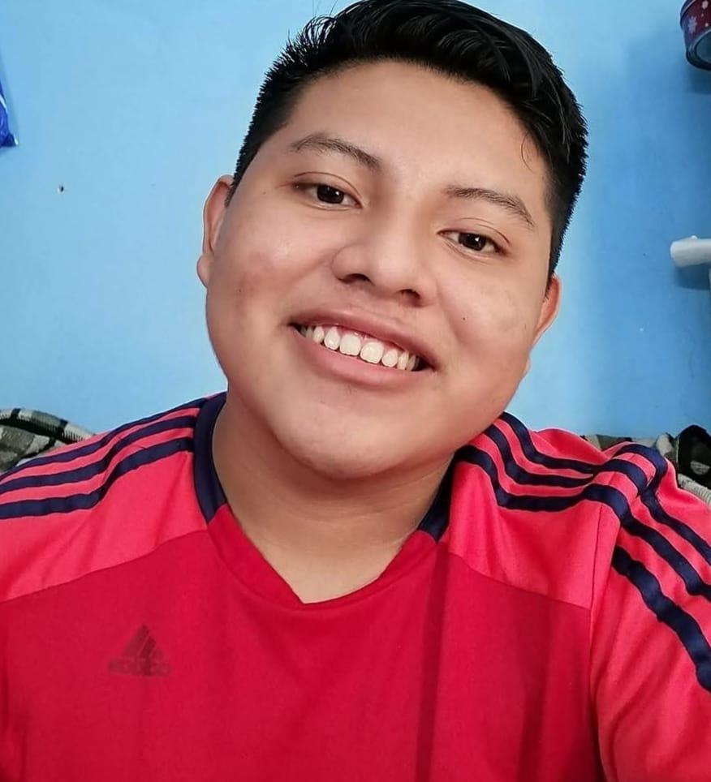

Curriculum Vitae

Yordi Alexis Ucan Hernandez
- 22 años
- Nacionalidad Mexicana
- 29 de Junio de 2002
* Contacto
- 9991419069
- hyordi34@gmail.com
- Fcebook: Yordi Hernandez
* Conocimientos
- Excel
- Java
- C++
* Habilidades
- Capacidad de trabajo en equipo
- Capacidad de Adaptacion
* Perfil Personal
Estudiante de 8° Cuatrimestre de la carrera
de Informatica
y Sistemas de Seguridad,
conocimientos basicos en programación,
computación y redes con disposición de seguir aprendiendo
y trabajar
* Formacion Academica
- Licenciatura en Informatica y Sistemas de Seguridad
(Estudiante)
- Centro Universitario Felipe Carrillo Puerto
* Experiencia Laboral
Empresa (2021)
- Desaroolo de aplicaciones moviles
- Analisis de datos